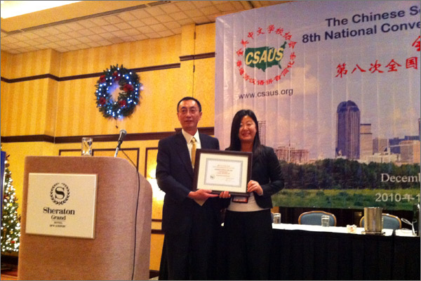
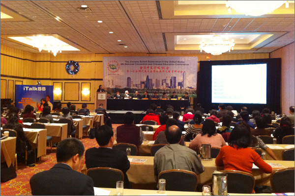

支持中文教育發展，iTalkBB免費贈送全美中文學校中文電視服務
（弗吉尼亞維也納12月5日）
全美中文學校協會授予iTalkBB"支持中文教育最佳企業成就獎"
12月3日在全美中文學校協會舉辦第八屆年會之時，作為首席贊助的iTalkBB新電信公司為了進一步促進中文教育在北美的發展，特送贈送給到會的眾多中文學校一年免費的中文電視服務。 iTalkBB之魅力中國中文電視收錄眾多中文教育類節目，不僅包括成語故事、快樂漢語等指導性的中文教育節目，還包括喜羊羊與灰太狼、西遊記等眾多中文動畫片，寓教於樂，激發北美華裔子女學習漢語的興趣，同時也幫助他們更有效的學習漢語知識和中華文化。
此次iTalkBB與全美中文學校協會合作，計劃在明年春節期間共同舉辦iTalkBB之魅力中國"我最喜歡的春節晚會"活動，只要各個中文學校將本校錄製的春節晚會上傳，通過整理將在其中文電視中收錄，並就行評選，通過網絡和電話投票而獲選的"最受歡迎的春節晚會"的學校將獲得特別的獎勵。只要學校報名參加，iTalkBB還特別贈送魅力中國一年免費的中文電視服務給學校，不僅為學校提供多媒體教學的硬件支持，同時還提供中文教學的軟件支持。
全美中文學校協會特別頒發給iTalkBB"支持中文教育最佳企業成就獎"。iTalkBB的市場部經理Karen表示："iTalkBB一直以來非常注重中文教育的發展，早在2008年就與中文學校協會合作舉辦了全美首屆中文作文比賽，並且全額贊助了8名獲獎青少年 '尋根之旅'的中國之行。iTalkBB一直秉承'為海外華人提供更好的服務'的宗旨，並將一如既往的推進中文教育的發展。"
全美中文學校協會授予iTalkBB最佳企業成就獎
iTalkBB支持中文教育
關於iTalkBB：
iTalkBB新電信是享譽全美的優秀通訊品牌，是國際電訊行業的領導和先驅。其以頂級全球網絡和前沿技術為依託，以最具競爭力的價格為客戶提供高質、清晰的本地、國內及國際長途電話服務，以及高清中文電視直播、回播與點播服務。其電話業務能完全取代傳統家庭電話，並享受多重免費提供的附加功能如來電等待、三方通 話、來電顯示、呼叫轉移等。另有獨一無二的功能——中國大陸、台灣、香港、南韓當地號碼，當地親友只要撥打此號碼，就能接通到在美國的親友，而無需支付國際 長途費用 。iTalkBB的高清中文電視服務，自問世以來便受到了廣泛的好評和歡迎。超過五十個熱門頻道支持實時直播與48小時回看，海量最新電影電視劇綜藝節目免 費無限點播，讓用戶以最低價格盡享華語娛樂。iTalkBB新電信將不斷努力，與您共同成就更美好的生活。iTalkBB設有24小時中英文的客戶服務熱線: 1-877-482- 5522和官方網站www.iTalkBB.com，一年365天提供不間斷的服務與更多信息的查詢。